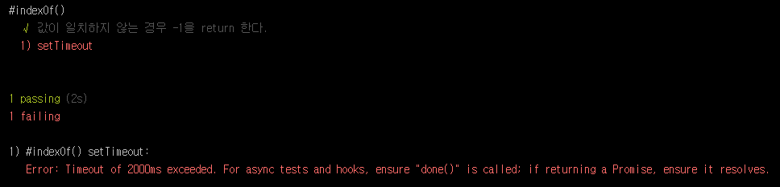

Mocha Tutorial - Step 04. 동기/비동기 처리
Mocha에서의 비동기 처리는 매우 간단 명료하다. 어떻게 보면 동기 처리보다 더욱 간단하다.
동기 처리
비동기 처리에서 시작하기 앞서 동기 처리를 먼저 보겠다. 일반적으로 우리가 Mocha를 사용하는 것은 동기 방식이다.
1 | var chai = require('chai'), |
동기 처리에는 콜백이 없으며, 이 콜백을 생략하면 Mocha는 자동으로 다음 테스틀 계속 진행하도록 되어있다.
비동기 처리
비동기 처리는 그저 콜백을 호출하기만 하면 된다. 콜백(일반적으로 done()이라 함.)을 추가함으로써 테스트(it() 또는 test())가 완료하기 위해 이 함수가 호출될 때까지 기다리게 된다.
코드를 보도록 하자.
1 | var chai = require('chai'), |

setTimeout 함수로 인해 1초 뒤에 실행되도록 되어있다. 여기서 done()을 호출을 하였기에 테스트가 종료되었다는 것을 알 수 있다. 만약 done() 호출이 없다면 오류를 발생하게 되어있다. 또한 기본 timeout인 2000ms가 지나가도 실패하게 되어있다.

Hooks에서의 비동기 처리
우리는 이전 Tutorial인 Step 03: Hooks에서 전/후 처리에 대한 Hooks를 알아보았다. 이 Hooks에도 동일하게 done()을 콜백하여 비동기 처리를 할 수 있다.
1 | var chai = require('chai'), |
위 코드를 보면 beforeEach()에서 1500ms 이후에 arr를 초기화하는 것을 볼 수 있다. 이처럼 비동기 처리는 테스트와 Hooks에 적용이 가능하며, 사용법 마저 매우 쉽다.
비동기 처리는 반드시 써야 할 경우가 온다. 이와 관련된 내용이 많지는 않지만 프로젝트 상황에 따른 많은 연습이 필요하다고 생각된다.
다음 Tutorial에는 외부 모듈을 불러와 사용하는 방법을 배워보도록 하겠다. 어느 개발자든 어느 프로젝트이든 하나의 .js에 모든 코드를 적진 않는다. 그만큼 중요한 내용은 아니지만, 혹시 모를 개발자를 위해~